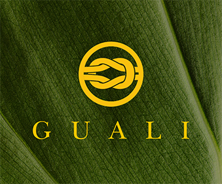

Ceciliakoor Sint-Niklaas organiseert Benefietconcert "KERSTEVOCATIE" tvv GUALI vzw
Het Ceciliakoor Sint-Niklaas organiseert samen met het Sint-Gregoriuskoor uit Kieldrecht een Benefietconcert ten voordele van het project GUALI in de Dominicaanse Republiek.
LEES VERDER